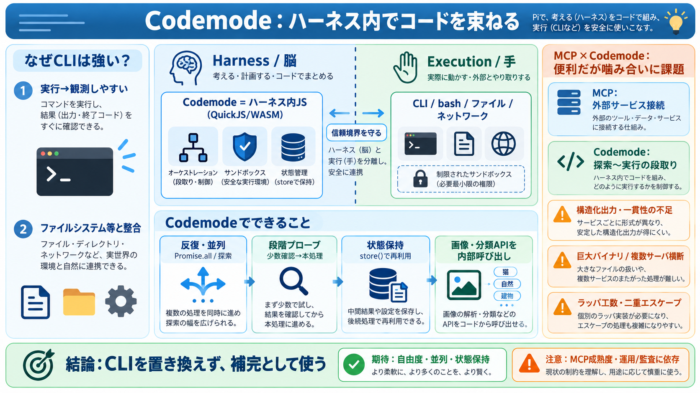

Pi 1.0 Release Guide: MCP, Codemode and Pi Durable - Developers Digest
A decision-intent comparison of pi, Claude Code, OpenCode and Codex CLI as your main agentic coding harness in late 2026…

Codemodeは、Piのハーネス側で“コード実行・オーケストレーション”を安全に組み立て、ツール呼び出しを反復・並列・探索可能にします。
ツールを「実行環境へ直投げ」せず、ハーネス内サンドボックスで段取りする。
MCP活用を前進させる一方、構造化出力や一貫性などにギャップが残る。
Ronacherは以前から、LLM用のカスタムツールを無理に文脈へ注入せず、CLI/スクリプトのように連結できる形を優先すべきだと考えていました。
LLMは実行後の変化を追いやすい（例：echo foo > /tmp/test.txtでファイルができる）。
学習済みの“世界”（ファイルシステム等）と整合しやすく、推測コストが下がる。
AIが呼び出せる“ツール”は、ハーネス側（信頼された脳）と実行環境側（制約された手）に分かれます。Codemodeは、この境界線を守ったまま束ね方を変えます。
意思決定・オーケストレーション（例：段取り/探索）を担当。
bashのような処理を実行。ファイル/ネットワーク/サンドボックス制約あり。
信頼境界と安全性を崩しにくく、複雑さを制御できる。
Codemodeの本質は、LLMが“実行環境へ複雑処理を投げる”のではなく、ハーネス内でサンドボックス化されたJavaScript（QuickJS/WASM）としてツール呼び出しを束ねる点です。
ハーネス内でJSがオーケストレーション（反復/並列/段階探索）。
単発のツール呼び出しより、実務フローを安全に表現しやすい。
Codemodeでは、Promise.allのような並列化や、「少数プローブ→本処理」といった段階的ワークフローをそのまま組み立てやすくなります。
Promise.allで並列呼び出し。
5〜10件だけ形を確認してから処理へ。
store()で中間結果をtranscriptに保存・再利用。
画像生成や分類モデルのような処理は、LLMが扱う“典型ツール”だと非効率になりがちですが、Codemodeならハーネス内部APIを直接呼べます。
内部APIで生成し、LLMへ適切に渡す（画像コンテンツ等）。
専用ツールを増やさず、必要なモデル呼び出しをCodemodeから実行。
MCPは外部サービスをAIが利用するためのプロトコルですが、Codemodeの“コード実行・オーケストレーション”とは常に理想的に噛み合いません。
外部サービス（例：Sentryなど）をAI側へ接続するための枠組み。
ハーネス内で探索〜実行を段取りし、必要に応じてツールを“見つけて使う”。
Codemodeでは、MCPツールをLLMへそのまま見せず、Codemode内で段階的に探索しながら実行することで、過度な推測を減らす狙いがあります。
MCPツール定義をLLMに直接提示しない。
Codemodeが検索・探索して“必要な候補”へ絞る。
段階的発見の後に実行。
Codemodeは無条件にCLIを置き換えるものではありません。むしろCLI/スクリプトの強みを残しつつ、弱点領域をハーネス側で補う位置づけです。
可能な場合は“実行→観測”しやすい連結形（CLI）を優先。
画像・分類・並列/反復・状態管理などはCodemodeで補う。
Codemodeは、専用ツールを増やす代わりに、必要な内部APIを呼び出すことで能力を拡張します。これはツール乱立の問題を緩和します。
画像/分類などを全部「LLM用ツール」として増やすと設計が硬直化。
Codemodeで内部APIを統合し、段取りと出力整形を一箇所で管理。
最大の課題は、MCPの現状がCodemodeの強み（構造化・一貫性・探索・実行統合）を十分に受け止められていない点です。
構造化出力（JSONスキーマ等）、結果の一貫性。
巨大バイナリ対応、複数MCPサーバ横断のツール検索統合。
そのため、Codemode＋MCPの実用では、設計上の煩雑さ（例：二重エスケープの混乱など）を吸収する“ラッパの工夫”が必要になります。
（例）ダブルJSエスケープが起きうる。
構造化や一貫性が弱いと変換が必要。
複数サーバ横断の探索統合が弱く、実装が肥大化。
Codemodeは有望なパターンですが、CLIの置き換えではなく補完として位置づけるのが安全です。価値はMCP側の成熟や、運用面（再実行・監査など）に強く依存します。
段取りの自由度が上がり、画像/分類・反復/並列・状態保持が実務化。
MCPとの不整合で“つなぎ”が増え、運用/耐久性にも課題が残る。
以下は本文章の文脈に基づく参照カテゴリです（原文・検索要約・過去履歴の論点を反映）。
A decision-intent comparison of pi, Claude Code, OpenCode and Codex CLI as your main agentic coding harness in late 2026…
People of Pi: We've shipped Pi 1.0 with Pi Durable. Go make them yours. # @boozedog/pi-codemode Pi Codemode plugin - T…
# @boozedog/pi-codemode Pi Codemode plugin - TypeScript code execution with sandboxed tools, typed host CLI, and MCP in…
By the end of this guide, you will understand what MCP is and why it became the dominant AI integration standard, how th…
### What Is Still Unknown / Limitations [...] of “still the best agent” remains subjective and was not supported by meas…